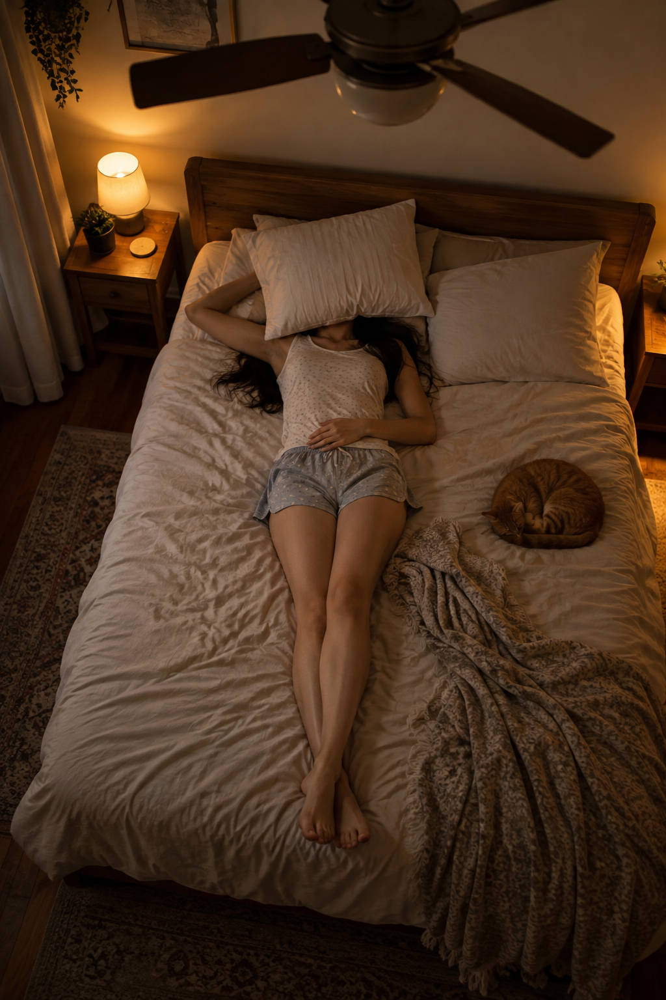

002 / 219
WORK / PROMPT DECODE
枕に顔を隠した寝室の俯瞰ショット
完整提示词 Prompt
20代後半の架空の成人女性。実在の人物や写真を参照しない。ダークカラーのストレートヘアで、顔は枕で完全に隠れている。暖かみのある低照度の寝室でベッドに仰向けに横たわり、片腕を曲げて頭の横に置き、もう片方の手を腰のあたりに添える。両脚は画面下方向へ自然に伸ばす。画面上部には回転中の天井扇風機。真上より少し斜めの視点で全身を捉えた構図、28mmレンズ相当の自然な遠近感。寝具の自然なシワ、木製家具、柔らかな暖色の間接照明を写実的に表現する。服装は素肌を十分に覆うノースリーブのナイトウェアトップスと、ゆったりしたショートパンツ。落ち着いた家庭的な雰囲気、写真のようなリアリティ、自然な肌の質感、文字や透かしは入れない。 ネガティブプロンプト：露出、裸体、局部の露出、乳首、性行為、未成年に見える表現、過度な性的演出、アニメ、イラスト、CG、人体の破綻、余分な手足、文字、ロゴ、透かし。